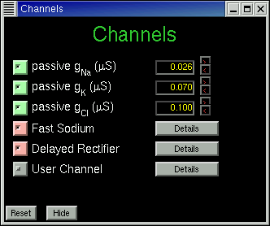
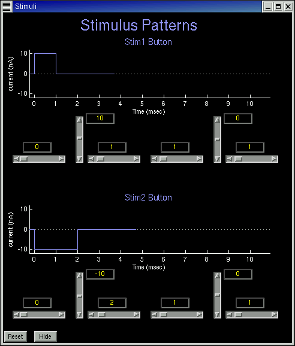

Guide to Using HHsim
HHsim is a graphical simulation of a section of excitable neuronal
membrane using the Hodgkin-Huxley equations. It provides full access
to the Hodgkin-Huxley parameters, membrane parameters, stimulus
parameters, and ion concentrations, and can be used for many sorts
of exercises.
Starting HHsim
If you've downloaded and installed the executable version of HHsim for
Windows, you can start HHsim via a shortcut on the desktop or an entry
in the Start menu. Or you can go to the HHsim folder and click on the
icon for hhsim.exe.
To run the Unix executable, cd to that directory and type ./hhsim to
begin.
If you've downloaded just the Matlab source code, run Matlab, cd to
the directory containing the source, and type "hhsim". Note: HHsim
requires Matlab version 6 or higher.
Main Window
The main window consists of two plots. The large plot displays
membrane voltage in red and external stimuli (current pulses) in blue.
The smaller plot displays three quantites as yellow, green, and cyan
lines. By default these are the Hodgkin-Huxley variables m, h, and n,
but other information can be selected, such as currents or
conductances. The yellow, green, and cyan pulldown menus select the
variables to be plotted.
Click on the purple Stim1 or Stim2 buttons to inject a
depolarizing or hyperpolarizing current stimulus. Click on the
Membrane, Channels, or Stimuli buttons to view and modify the
simulation parameters.
Radio buttons at the top of the display will allow you to use three different modes:Â cursor, zoom and pan. In cursor mode, clicking on any of the plot lines causes an elliptical cursor to appear, and the value of the selected variable is displayed in the cursor subpanel in the bottom right corner of the main window. Cursor control buttons move the cursor left or right, either by one timestep or to the next local maximum or minimum of the graph. In zoom mode, left-clicking on a plot will zoom in; right-clicking will bring up more options. Clicking and dragging your cursor in zoom mode will give a zoom box for a more controlled zoom. In pan mode, clicking a dragging on a plot will allow you to pan in any axis direction.
 The simulation runs whenever a stimulus is applied or a parameter
value is changed. It stops when the membrane voltage appears to have
reached an asymptote. If it stops too soon, click the yellow
Nudge button to nudge the simulation along for a few more time
steps. Click Run (green button) to enter continuous run mode,
and Stop (red button) to leave this mode.
The simulation runs whenever a stimulus is applied or a parameter
value is changed. It stops when the membrane voltage appears to have
reached an asymptote. If it stops too soon, click the yellow
Nudge button to nudge the simulation along for a few more time
steps. Click Run (green button) to enter continuous run mode,
and Stop (red button) to leave this mode.
The Clear button clears the display and resets the time, but
does not affect any other simulation parameters. The Recall
button resets the Hodgkin-Huxley variables to a previously-stored
state. Initially this is the resting state; see the cursor control page for information on saving
state for later recall. Zoom in and Zoom out buttons are
self-explanatory.
Click here for cursor controls
The Print button outputs the plots in the main window as a
Postscript file, suitable for printing or for inclusion in other
documents. The Export button saves the plotted curves as a
table in ASCII format, readable by Microsoft Excel, Matlab (using the
importdata function), and many other programs. If the
cursor is active, only that curve are exported; otherwise all the
curves are exported.
Membrane Window
The Membrane window provides for manipulation of internal and external
ion concentrations, and adjustment of a few membrane parameters.

Channels Window
The Channels window provides access to parameters for each of the
active or passive channel types. Channels can be temporarily disabled
by clicking the associated toggle to the left of the channel name.

For passive channels the only parameter is the conductance, in
micro-Siemens. For active channels, namely the fast sodium channel,
the delayed rectifier, and a user-defined active channel, a Details
button calls up another window for accessing the channel's
Hodgkin-Huxley parameters. Shown below is the window for the fast
sodium channel.

Stimuli Window
The Stimuli window controls the parameters for two external stimuli,
Stim1 and Stim2, each of which consists of either a single current
pulse or a sequence of two independently-adjustable pulses.

Drugs Window
The Drugs window allows application of any of three drugs: TTX, which
inhibits the sodium current; TEA, which inhibits the potassium
current; and pronase, which eliminates sodium channel inactivation.
Any time a drug is being applied, the Drugs button in the main window
will be yellow instead of the usual gray

Voltage Clamp Mode
HHsim starts up in "Voltage Reporting" mode. To switch to "Voltage Clamp" mode, use the pulldown menu in the lower right portion of the main screen.
Click here for voltage clamp controls
This work was supported in part by National Science Foundation grant
DGE-9987588. Any opinions, conclusions, or recommendations expressed
herein are those of the authors and do not necessarily reflect the
views of the National Science Foundation.
Dave Touretzky
Last modified: Wed Nov 5 01:03:38 EST 2003